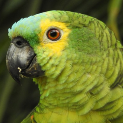
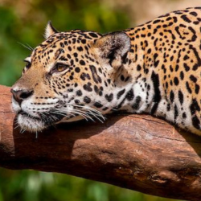

.png)
Sobre o Nossa Santuário Ecológico
Situada nas terras férteis do Brasil, a Reserva Ecológica Animalesko é um verdadeiro tesouro natural que encanta os visitantes com sua biodiversidade única e paisagens deslumbrantes. Abrangendo uma área considerável de aproximadamente 1.500 quilômetros quadrados,essa reserva é um oásis de tranquilidade e beleza. A Reserva Ecológica Animalesko compromete-se com a proteção do meio ambiente. As atividades humanas são cuidadosamente gerenciadas para preservar a biodiversidade e manter o equilíbrio ecológico.
-
Diversidade da Vida Selvagem
A Reserva Ecológica Animalesko abriga uma rica variedade de espécies de plantas e animais, algumas das quais são exclusivas da região. Você poderá observar onças, tamanduás, tucanos, serpentes coloridas e uma miríade de borboletas e libélulas.
-
Conservação ambiental

A Reserva Ecológica Animalesko compromete-se com a proteção do meio ambiente. As atividades humanas são cuidadosamente gerenciadas para preservar a biodiversidade e manter o equilíbrio ecológico.
-
Turismo sustentável
Os visitantes podem explorar a reserva por meio de trilhas guiadas, passeios de barco e avistamento de aves, sempre com o auxílio de guias experientes em conservação ambiental. A acomodação é em alojamentos ecológicos, proporcionando uma experiência de turismo responsável.